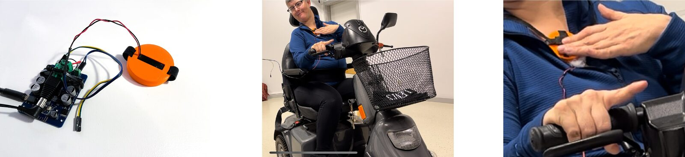
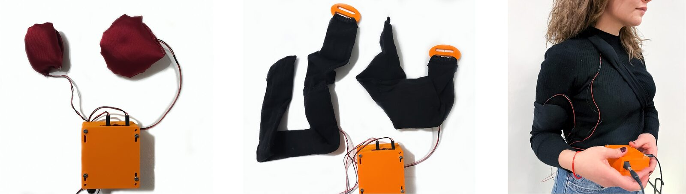
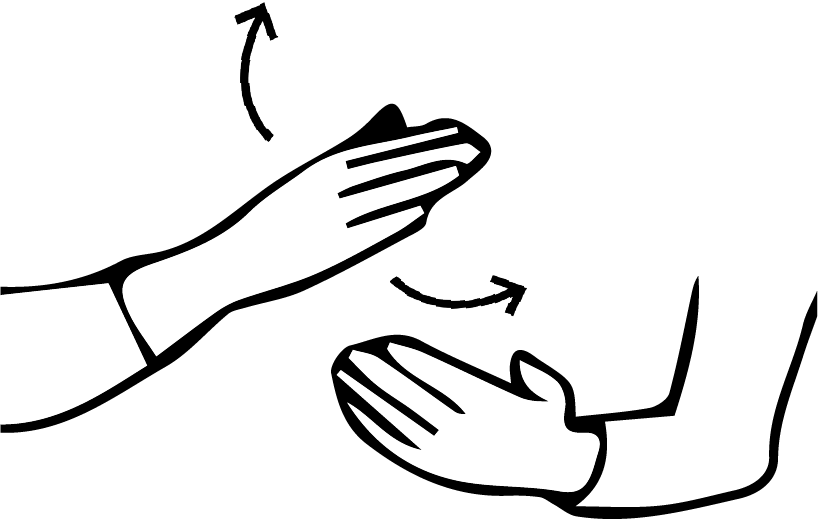
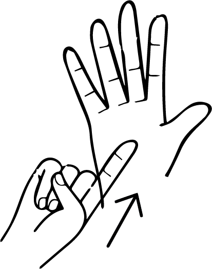
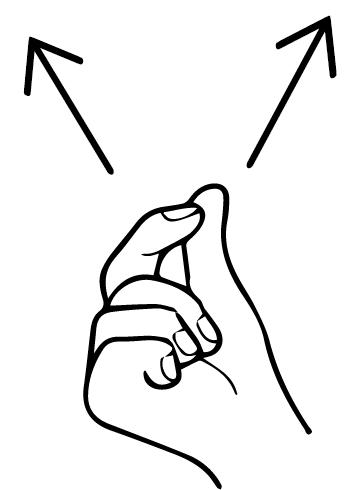
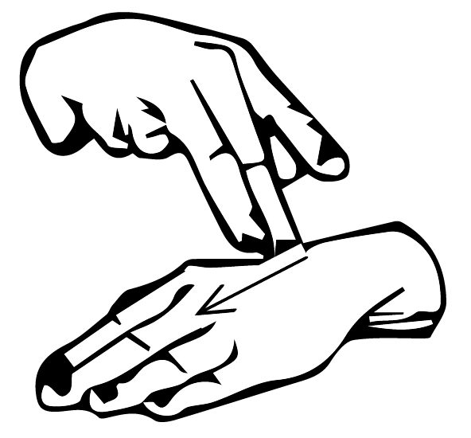
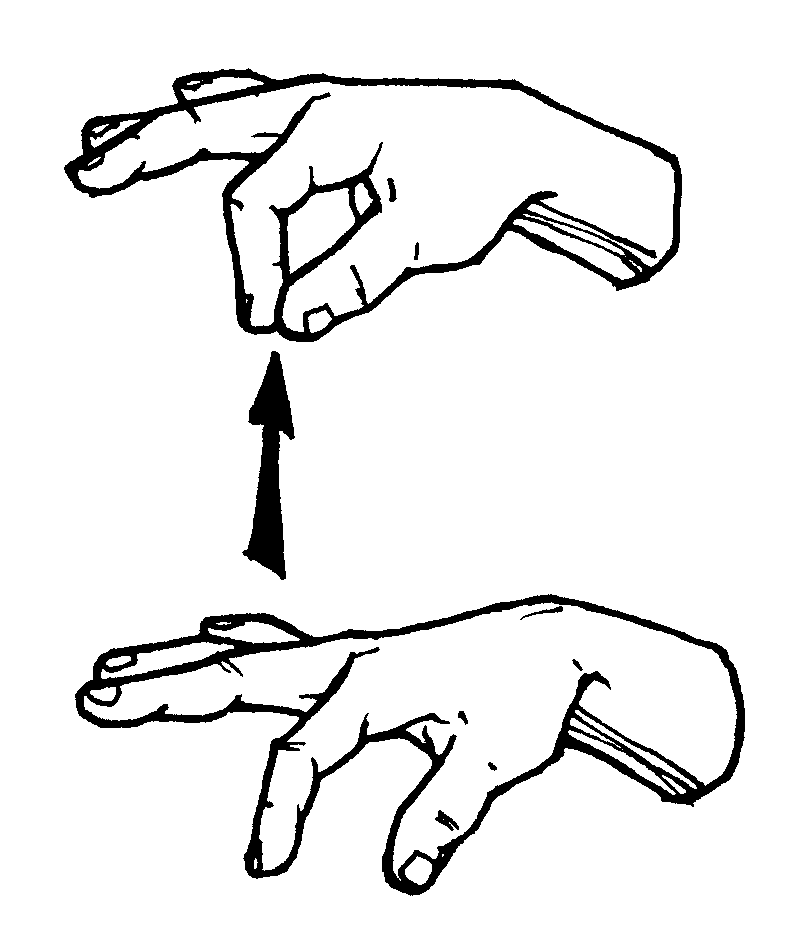
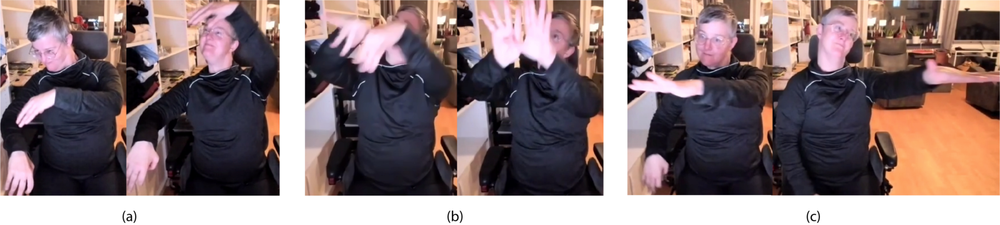
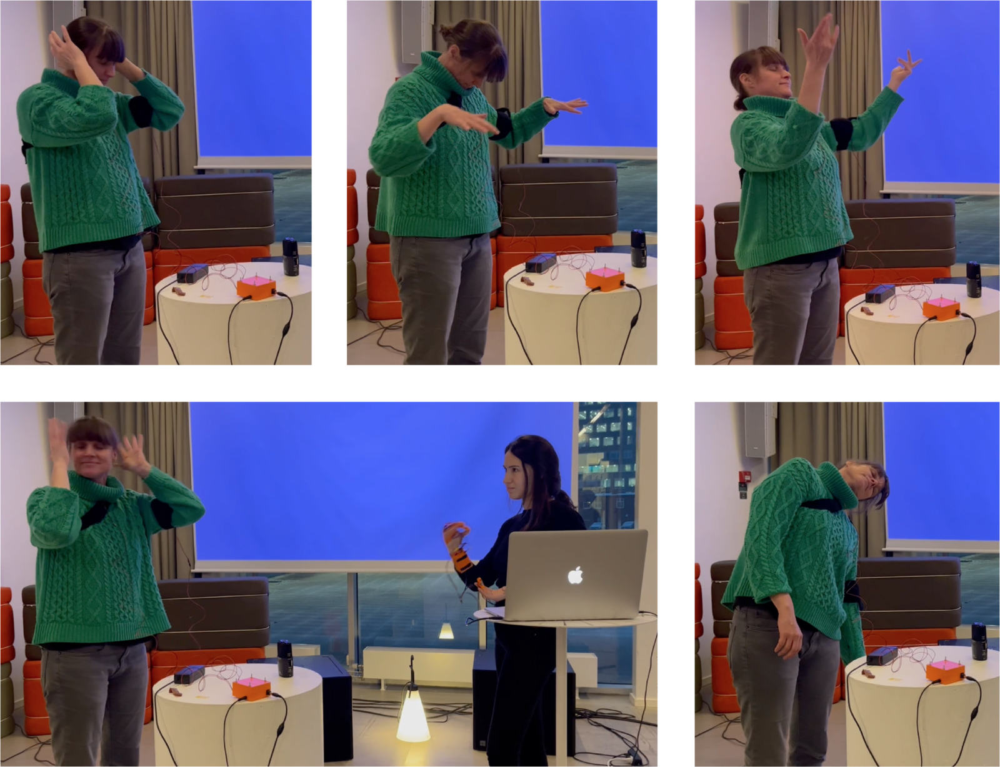

Touch, Listen, (Re)Act: Co-designing Vibrotactile Wearable Instruments for Deaf and Hard of Hearing
Abstract
Active participation of Deaf individuals in the design and performance of artistic practice benefits increasing collaboration potentials between Deaf and hearing individuals. In this research, we present co-design sessions with a Deaf dancer and a hearing musician to explore how they can influence each other’s expressive explorations. We also study vibrotactile wearable interface designs to better support the Deaf dancer’s perception of sound and music. We report our findings and observations on the co-design process over four workshops and one performance and public demonstration session. We detail the design and implementation of the wearable vibrotactile listening garment and participants’ self-reported experiences. This interface provides participants with more embodied listening opportunities and felt experiences of sound and music. All participants reported that the listening experience highlighted their first-person experience, focusing on their bodies, "regardless of an observer". These findings show how we can improve both such an internal experience of the listener and the collaboration potential between performers for increased inclusion. Overall, this paper addresses two different modalities of haptic feedback, the participation of Deaf users in wearable haptics design as well as music-movement performance practice, and artistic co-creation beyond technology development.
Author Keywords
vibrotactile, haptics, inclusive design, accessible digital musical instruments, movement-based interaction,
CCS Concepts
•Applied computing→Sound and music computing;
•Human-centered computing→Accessibility design and evaluation methods; Participatory design.
Introduction
In accessibility research for music, user participation for whom the technology is built is crucial. Access barriers that disabled people experience in artistic practice and everyday life frequently remain hidden from designers without experiencing them [1]. This challenge in need-finding benefits from participatory approaches and co-design practices. In this research, we co-design an inclusive music-movement interface for increased collaboration. The paper focuses on developing shared music and movement vocabularies for a Deaf dancer and a hearing musician and discusses how inclusive musical instrument design benefits from hearing-impaired artists’ participation.
Although hearing-impaired individuals perceive music differently than hearing people, they experience a collective artistic quality from visual, vibrotactile, and kinesthetic feedback of music. Many instrument designers leverage these modalities that either replace or support the aural stimuli to convey musical information. Due to the diversity in Deaf communities, such sensory substitution methods may not work for all users. but reveal their musical needs, preferences, and engagements. Petry et al. state that sensory substitution should create “opportunities to explore sound and customize feedback” [2], proving the importance of directly working with Deaf participants in several stages of instrument and performance design.
In this research, we apply participatory methods to develop inclusive musical interfaces and performances, including a wearable vibrotactile interface and a collaborative performance practice. We expand on a previously developed inclusive digital musical instrument (DMI) and performance space for a mixed audience [3], discussing the instrument design process over three workshops with Deaf individuals or their family members. We primarily co-create music-movement performances as well as interfaces with Deaf and hearing participants, highlighting felt, embodied listening experiences beyond solely providing musical content. This research investigates two forms of vibrotactile feedback for Deaf artists’ active participation in music and dance collaboration.
The diversity in hearing leads to different physical and societal associations. A majority of hearing-impaired individuals might be hearing-impaired later in life and usually referred to as “hard-of-hearing” [4] or “deaf” with a lower case “d”. They might have little or no hearing, prefer to communicate with spoken languages, and benefit from assistive devices. On the other hand, a particular group of deaf people who share a sign language, culture, and community identifies as Deaf with a capital “D”, as a linguistic minority, and as culturally deaf [5]. They may or may not use assistive devices. In our research, we engaged with participants from Deaf communities. We use the terms that our participants reported preferring or identifying with but our results can extend to individuals outside the Deaf communities. “Hearing” is used for those who reported no hearing impairments (see Ethics Statement).
Approaches to DMI design for Deaf and Hard of Hearing
The assistive technologies and accessible DMIs for Deaf and Hard-of-Hearing (D/HoH) users are developed to support users’ engagement with music either with visual or vibrotactile representations. While most utilize visuals or vibrotactile stimuli to provide musical information, some researchers incorporate them to enrich users’ experiences. Nanayakkara et al. study how visual-haptic displays can assist and enhance the musical experience of deaf people [6]. Unlike assistive visual devices, Fourney and Fels provide visuals to inform “deaf, deafened, and hard-of-hearing music consumers” about musical emotions conveyed in performances, extending their experience of accessing the music of the larger hearing culture [7].
Burn designs new interfaces using haptic and visual feedback for sensory replication, targeting “deaf musicians who wish to play virtual instruments and expand their range of live performance opportunities” [8]. Soderberg et al. study how to facilitate the collaboration between hearing and hearing-impaired musicians with “more detailed visualization and distributed haptic output” [9]. Haptics is proven to support hearing-impaired participants’ musical rhythm and energy perception [10]. Petry et al. [2] recognize the diversity within Deaf communities in interface development and allow customization of feedback.
Although over 15 percent of the population experiences some level of hearing loss [11], the collaboration opportunities with Deaf individuals are limited. We believe that Deaf individuals’ active participation is crucial in design, technology development, and performance. Extending prior research, we direct our current research and design approach into participatory methods in co-creating music-movement interfaces and performances with Deaf and hearing participants.
Participatory Design for the Deaf
When listening to music, the Deaf community experiences profound isolation, and its members need non-auditory modality to perceive its context, features, and emotions. Beyond listening, participating in music contributes to their daily life by developing a better understanding of rhythm [12], improving communication and connection with others [13] [14], or accessing opportunities for artistic and self-expression [12].
Marti and Recupero conduct workshops with Deaf participants to develop new augmentation to hearing aids for better representation of their aesthetics, self-expression, and identity [15]. The authors emphasize Deaf users’ participation and collaboration with the hearing users in the design process. Wilde and Marti study the “making, participation, and co-design” processes of developing wearable technologies for Deaf women’s aesthetic enhancement [16]. Turchet et al. approach participatory methods by engaging the audience to partake in performances using “musical haptic wearables” [17].
In this study, we adopted participatory approaches to support the designers in understanding the Deaf dancer’s perception of sound, prior music knowledge and experience, and dance practice. They were also integrated into design, choreography, and composition processes to involve the dancer as a design partner. She was actively involved in the ideation, prototype design, and performance stages to co-create an interface that offers vibrotactile feedback when responding to music. Just as Sanders details the participatory experiences, we focused on how users want to “express themselves and directly and proactively participate in the design development process” [18].
We held three workshops and a remote final meeting, each iteratively exploring different aspects of interfaces and performances. The first workshop introduced the project. The second workshop focused on co-creating haptic interfaces with a Deaf dancer, exploring on-skin haptics for different musical pieces and sound effects. In the last workshop, we co-created a music-movement mapping and performance with the Deaf dancer and remotely collected co-designers’ reflections.
Workshop 1
Workshop 1 introduced the study directions and specifications to local artists and Deaf individuals. It involved three participants, all of whom are from art and disabilities communities. One participant (P1) is an artist, a performer who designs multisensory inclusive experiences, and a close relative of a Deaf individual. The second participant (P2) is an artist, a physical theatre performer, and a pedagogue who specializes in physical expression. She remotely joined the workshop. The last participant (P3) is a Deaf dancer, who experiences some physical limitations in addition to her hearing impairment and dances with a local dance company. All participants were recruited on a voluntary basis. We collected their oral consent about how we plan to use the workshop material before the sessions.
During the two-hour sessions, after informing them about the preceding research, the next workshops’ formats, objectives, and final goals, we surveyed participants’ hearing, assistive device use, and cultural associations. These surveys collected their experience with creating, listening to, and enjoying music in addition to their movement practices both orally and in writing. The participant demographics are provided in Table 1, detailing their hearing, cultural associations, and languages. For P3, we invited two Swedish sign language interpreters and her assistants who also experience profound hearing loss and communicate with sign languages.
Table 1: Workshop 1 Participant Demographics
Participants | Hearing | Cultural Associations | Languages |
P1 | hearing | mostly with hearing | Signed Swedish Spoken Swedish and English |
P2 | hearing | equally with D/HoH and hearing | Spoken Swedish, English, others |
P3 | profoundly deaf | equally with D/HoH and hearing | Signed Swedish |
The participants shared their previous experiences with listening and moving to music, reporting that they all engage in music at varying levels from listening as a social activity to composing. P1 reported that her Deaf daughter enjoys singing even though her difficulty singing on pitch. P2 expressed that she actively uses music “therapeutically for wellbeing”. Both P1 and P3 shared how immersive experiences when listening to music improve Deaf individuals’ perception and enjoyment. They further highlighted that they use vibrations from subwoofers or large resonating objects to support listening to music. Similarly, P2 suggested placing speakers closer to the audiences’ feet, under their seats, and using physical and visual expressions such as colors, movements, shapes, and lights and shadows in order to make the music performance more accessible for different hearing abilities.
Most participants emphasized how multisensory integration provides the hearing-impaired audience with a context to understand what music delivers. P3 expressed that she did not enjoy the quietness in music (beyond aurally) and she needed to feel the sound at a very high volume or receive feedback from another modality to follow, such as lights or visuals. She also reported that she could feel loud bass/subwoofer sounds despite her hearing loss. Both participants who use sign language in daily life (P1 and P3) shared how Deaf individuals engage more comfortably with communicating using sign languages compared to other communication means. Based on P1 and P3’s comments, we decided to keep some qualities of Felt Sound, such as providing non-aural context and utilizing sign language.
We also asked the participants about their movement practice, whether they move to music, and their reflections on the relationship between music and movement. All participants reported that they dance solo or with others. They thought that music and movement were very connected to each other and movement supported their enjoyment of music. All participants expressed that they move to the music in several different ways such as foot or finger tapping, head nodding, body sways, and sign language song interpretations. P3 expressed the challenge in learning the rhythm of the dance movements, reporting that she learned to move to music by foot-tapping after someone taught her how to. She also shared her interest in using vibrotactile feedback as a wearable or an attachment to her wheelchair to receive musical information. Based on the participants’ comments and reflections, in the following workshops, we decided to work closely with P3 on co-designing wearable vibrotactile interfaces specifically for her and with P2 and P3 on co-creating the music-movement performance.
Workshop 2
The second workshop included the Deaf dancer (P3), her assistant, and two Swedish sign language interpreters. The workshop aimed to test two modalities of haptic feedback (in-air and on-skin), positioning the on-skin actuator prototypes, and P3’s experience with different musical compositions. The study participants first listened to four different sound files with a two-subwoofer array and later listen to the same sound files with a prototype of a wearable haptic module.
We tested four sound files with different musical qualities (an excerpt from Felt Sound, African drumming, singing, and piano pieces) using a two-subwoofers. The dancer and her assistant reported that the subwoofers created felt sensations in the room. P3 was able to feel the music through in-air vibrations, stating that she can “feel the music inside” of her body, pointing to her chest and torso. Her assistant reported feeling as if “the whole room was moving”. Although these sensations created an immersive effect, they were less nuanced to recognize different musical features, qualities, and effects. She needed to sit close to the speakers or touch them to amplify the vibrations, reporting that she felt the Felt Sound and African drumming pieces more profoundly and more nuanced than the voice and piano pieces. Although the vibrotactile listening was less pronounced in voice and piano, she was able to recognize the pitch changes and onsets in the singing and the instrument in the piano piece.
The listening was repeated with the same sound files using a wearable vibrotactile prototype. For flexibility in movement, she wanted wearable modules in different locations: one worn on the arm and another one on the chest area. Figure 1 shows the first prototype of the haptic modules, consisting of Haptuator Mark 2 from Tactile Labs1, an audio module, and an actuator enclosure. This enclosure was prototyped using 3D printing and padded with a foam layer to avoid rattling noise between the actuator and PLA enclosure. This part also included velcro straps, making it wearable at different locations on the body. For both setups, the sound files were pitch-shifted to fit in the subwoofer and Haptuator frequency range, except for the Felt Sound excerpts since their frequency content is already within the desired range.


(a) (b) (c)
The haptic module is prototyped with a Haptuator, Bluetooth audio module, and 3D printed enclosure for the haptic module. We tested this haptic module on her chest, arms, and hands.
Similar to the subwoofer tests, P3 felt the Felt Sound and African drumming pieces more profoundly and more nuanced. She recognized the beats in the drumming and musical features in the Felt Sound, such as amplitude and frequency modulations, rhythmic elements, and different envelopes. After the listening tests, she wanted to simultaneously use at least two modules to amplify the physical sensation for the next iterations and suggested implementing haptics on her wheelchair for a full-body experience. Although the wearable modules provided more amplified sensations, we observed that she needed to press them to her chest or have the straps tightened on her arm. Based on these observations, we decided that the wearable interface needed to more closely touch the skin for the next iteration. The touch helped her recognize the nuanced changes while the in-air haptics created more immersive, full-body sensations. We observed that both modalities offer important qualities that enrich more embodied listening experiences.
Workshop 3
Workshop 3 focused on testing the redesigned modules with P3 (see Figure 2) and co-developing a music-movement performance. We upgraded these modules in shape and material for two reasons: (1) ergonomy and usability and (2) effectiveness of the actuation, replacing the 3D printed modules with similarly sized fabric-foam enclosures based on the dancer's feedback on their ergonomics. During the second workshop, P3 commented that she needed more flexible and softer wearables. We also observed that she needed to hold and press the module to feel the vibrations closer to her skin. For more comfortable use, we designed both module enclosures and wearable straps with soft, stretchable, and stable fabric that affixed haptic modules to the dancer’s body ( see Figure 2 ).
Another reason for redesigning is to provide sufficiently strong vibrotactile feedback. The vibrations were more significantly perceived on the skin with a non-dampening foam. The PLA material from the earlier prototype (Figure 1-a) dampened some of the vibrations through its thickness and infill structure and the enclosure required a foam layer between the part and the actuator to avoid the rattling noise. Because this two-layer structure decreased the intensity of the vibrations and proximity to the skin, it was replaced with a fabric-foam enclosure. Additionally, the wearable straps were replaced by stretchable materials connected by 3D-printed fasteners to provide enough support while dancing.


(a) (b) (c)
Two haptic modules, including Haptuator Mark 2 brand, type C and D actuators, are connected to the Bluetooth audio amplifier. A 3D printed enclosure is designed for the amplifier and its power, audio input, and output connections. Elastic straps are designed to enclose the new haptic modules to fixture them on desired locations on the body. Fasteners are 3D printed to adjust the tightness and stability of the wearable straps.
The last adjustment to the interface was coupling two haptic modules for simultaneous use, connecting them to the audio module’s left and right channels. The modules in Figure 2-a were embedded in the straps in Figure 2-b. When worn on the arm and chest (see Figure 2-c), these parts provided vibrations close to the skin and 3D-printed fasteners allowed users to adjust the tightness. These wearable modules were prototyped in collaboration with the dancer. During this co-design process, we continually integrated her feedback and design considerations.
Workshop 3 also explored co-creating a new composition, movement vocabulary, and choreography with the dancer (P3). We designed the mapping between musical gestures (previously composed ASL-inspired gestures, see Table 2 ) and dance gestures (see Figure 3 and Table 3).
Table 2: The gestural vocabulary and the associated sound events.
ASL Gesture | Meaning | Sound Engine | Detection |
|---|---|---|---|
 | Music | Low-frequency beating | Acceleration |
 | Show | Trigger drones | Magnetic Sensing |
 | Poetry | Frequency change | Pressure sensing and acceleration |
 | Empty | Clear all sound engines | Magnetic and pressure sensing |
 | Discover | Add a new sound engine | Magnetic and pressure sensing |


Co-creating the Dance-Music Composition
With P3, we developed a shared performance space where the dancer both participated in the artistic creation and design processes such as ideation, prototyping, and performance. Her participation was crucial in two ways: (1) her persona brought her specific requirements and needs to the forefront and (2) she embodies a unique set of skills and artistic practices. Although the Deaf community includes diverse hearing abilities and musical interests, through this bespoke design, we developed a better understanding of some of their musical expectations, requirements, and engagements, enabling us to co-design a shared performance space across diverse hearing and physical abilities.
The performance practice was shared between the dancer and the musician through (1) on-body, vibrotactile music and (2) a narrative presented with sign language gestures and choreography. This practice focused on the dancer’s interaction with the musician’s live gestural performance. The co-designers also developed a movement vocabulary in response to Felt Sound's gestures. Because the dancer preferred performing a choreographed sequence rather than improvisation, the movements were selected from her repertoire and mapped to the musical gestures and vibration patterns. Different gestures and vibration patterns performed by the musician provided movement cues for the dancer. More specifically, the dancer received the music signals through the four-subwoofer speaker setup around the performance space and through two haptic modules (placed on the arm and the chest). In response, she performed her dance movements when she recognized specific vibrotactile and visual cues (see Table 3).
This movement vocabulary was planned to be performed to a mixed audience. However, the documentation was recorded virtually. Figure 3 displays some of these gestures composed by the Deaf dancer in response to musical gestures and vibrations.


The Deaf dancer composed four dance movements in response to the different vibration patterns. Three movements are connected with arms waving gestures in-air to represent the intensity of the vibrations.
Table 3: Mapping between a narrative choreography following the storyline of a storm and the associated musical gestures with the vibration patterns
Dance Gestures | Dance Metaphors | Music Gestures (ASL) | Musical Events |
|---|---|---|---|
dabbing gesture | raindrops | discover gesture | slowly increasing intensity of a new sound engine |
flexing finger gestures | flying bird | music gesture | pulsating effect and vibrato |
scanning space with the hand and gaze | horizon | empty gesture | fading out sound and clearing all sound engines |
arms waving in space | storm | show gesture | triggering drones and increasing the intensity of vibrations |
relocation on stage | new movement | poetry gesture | immediate frequency drop |
Results and Discussion
Performance and Public Demonstration
The workshop series concluded with a public performance and demo session. Approximately ten hearing audience members joined the session on a voluntary basis. Due to Covid-19 restrictions, the dancer could not attend the collaborative performance and was presented virtually. In addition to a live performance, the workshop excerpts were presented and participants’ reflections were collected both verbally and in a questionnaire. The audience reported that the most effective part of the performance was “the dialogue between the musician and the dancer” and “the bass frequency content of the music”. For one participant, both body movements and sign-language-inspired gestures exuded a dance quality.
In the demo session, the hearing participants tested the haptic modules, engaging with them in different ways. Some preferred to wear both modules on their arms and chest, others held the modules in their hands or pressed them to their chest. Figure 4 shows the improvised movements of a hearing dancer while she listened to the music simultaneously with the subwoofers and wearable haptic modules. One participant who listened with the haptic modules reported that “[she] had to listen in a different way, not only aurally but also in her whole body”, describing it as an internal listening experience. The vibrations created a sensation that reminded her of “a dialogue between skin and heart.” Similarly, one participant with a music background said that “I did not consciously separate two different modalities”, instead “[the listening] became one experience.” Another participant reported that it was effective to feel the music through vibrations first, “neutralizing the listening experience beyond localized sensations on the body.”


The embodied listening experience where the sound is delivered by the haptic modules combined with the four subwoofer speaker arrays was also tested with a normal-hearing dancer who improvised dancing to the music performed by the ASL gestures.
Emerging Themes
During workshops (W1-3) and public sessions (PS), four themes emerged. Participants reported two distinct experiences with haptics through subwoofers and haptic modules. They also highlighted the learning process of the mapping between two modalities and actively participating throughout the design and performance.
Embodiment through Space
Both the dancer (P3) and some hearing participants highlighted their experience with the two modalities of the haptic sound display (W2 and PS). The dancer reported that she needed stronger vibrations to follow the articulations in music, specifically to identify the mapping during dance. The in-air vibrations from the subwoofer speakers provided felt sensations on the body without the nuances of the sound. She reported that the in-air vibrations were felt both on her body and in the surrounding space and they are a form that she was used to when experiencing sound. (W2 and W3).
The hearing participants reported that the sound from the subwoofers was felt both in the room and inside the body, and they also experienced the vibrations through the resonating objects in the room. They defined the combination of two modalities as “calming, relaxing, and meditating” and leading them to “listen in a different way […] with the whole body" (PS). Similarly, one shared her experience of feeling the music “inside of [her] body […] in the torso and entire body.” (PS).
Bodily Felt Sensations
The on-body haptic modules offered more sensitive and articulate listening experiences, especially when simultaneously worn on more than one location on the body. The dancer (P3) explained her experiences wearing the haptic modules: “I understood what the sound was about. I could feel the difference. I could feel the diversity and the flow in music.” (W2).
One hearing participant with a dance background explained her experience with vibrotactile feedback and movement as "[...] the skin felt the vibrations that went into the body and the movements grew from there." (PS). Another hearing participant reported that they “felt it more than hearing [the music]” (PS).
Learning Process and Practice
The dancer (P3) sometimes experienced difficulty engaging with the interfaces, primarily because she was unfamiliar with receiving musical information through vibrotactile feedback. Similarly, she needed more practice to learn how different sound effects and musical features feel through vibrations.
P3 expressed “This is the first time I can listen to music and I need to learn and practice what causes the changes in the music.” (W3). These co-design workshops showed that understanding the music through different modalities of vibrations, including learning how to feel and interpret the vibrations, requires ongoing practice for Deaf users. Especially crucial is providing frameworks for them to interpret the musical experience beyond using assistive tools and technology.
Active Participation in Musical Creativity
P3 influenced the design of the haptic modules. She directed the co-design for the wearable locations and the material selection. The design also reflected her movement and gesture preferences (W2). We took a more participatory approach in co-designing the music and movement composition. She expressed that “different vibration patterns served as movement cues” and “co-creating the choreography supported [her] learning of the mapping” (W3). For the hearing participants, this co-created vocabulary was effective in delivering the music (PS). Creating this shared design space not only enabled us to directly incorporate her feedback but also revealed her expectations, providing future directions for new DMI designs.
From User-Centered Design to Participatory Approaches
The user-centered design process focuses on how the design meets user needs. Researcher and designer roles are interdependent but distinct. The researcher mediates between the user and designer. As Sanders states, in participatory design, these roles blur and users become “a critical component of the process”, explaining how users “want to express themselves and to participate directly and proactively in the design development process” [18]. Such participation is especially crucial in “design for experiencing” because as a “constructive activity” it requires both explicit and tacit knowledge gained from both the designer and user actively accessing the user’s experience [19] [20]. Similarly in our workshops, the process of co-creating the music-movement performance and its tools revealed the Deaf dancer’s first-person experience in receiving music and reacting to its felt sensations while keeping this experience as the design source.
We observed her reactions to the musical signals and gestures, perceptive to the intensity and energy changes, specifically with the wearable haptic modules. Although vibrotactile feedback can overwhelm users after a long period of listening, she wanted to experience the sound through multiple wearable modules in different locations. We believe that multichannel vibrotactile feedback intensifies the experience and facilitates learning musical features. We continually observed her interaction with the haptic technology and integrated it into iterations of the interface.
Similarly, her participation was crucial to the design process, specifically to identify her musical expectations and her artistic role. Gluck et al. highlight that these participatory steps range from knowledge development and brainstorming to product development [21]. In this case, we include the performance and artistic practice steps. After the introduction, she voluntarily participated in design activities such as ideation, need-finding, discovery, design, and performance. Because of physical and time constraints, she could not participate in the prototyping and implementation processes, but she was involved in conceptual development, testing, and evaluation.
We believe that shifting design approaches from user-centered to participatory becomes more essential when working with Deaf users because the perception of vibrotactile feedback varies significantly with hearing abilities. This participatory approach allows for customizing the design, feedback form and intensity, and multimodality. A practice period significantly helps Deaf participants better understand the sound-to-vibration mapping. During the workshops, using gestural displays from sign language was helpful in describing specific sound effects. This observation highlights integrating sign languages and more embodied expressions into Deaf music and movement composition, which provide familiar ways of communicating and non-aural ways of interpreting the musical context.
Conclusions and Future Directions
Despite the differences in music perception and engagement between Deaf and hearing people, both communities share musical experiences through music’s visual, vibrotactile, and kinesthetic qualities. We focused on developing shared music and movement practices for a Deaf dancer and a hearing musician, discussing how inclusive musical instrument design benefits from the participation of hearing-impaired artists. We applied participatory design methods to both interface design and collaborative music and movement performance to identify Deaf users’ musical and artistic needs and to highlight felt, embodied listening experiences beyond assistive purposes. We believe research should equally focus on collaboration, performance, and developing shared practices as much as designing assistive devices and accessible instruments.
Several conclusions emerged.
A learning/practice period with vibrotactile feedback is needed to support Deaf users’ perception, understanding, and interpretations.
A shared non-oral vocabulary, such as sign language, is needed when co-creating artistic practices with Deaf participants.
The Deaf community needs to be carefully approached and not be labeled without knowledge of their cultural and societal associations.
The Deaf participant wanted to actively participate in music performance, composition, and listening.
The Deaf and musical instrument design communities can benefit from increased collaboration.
Acknowledgments
Touch, Listen, (Re)Act has been developed with the support of The Europe Center at Stanford University. We also thank ShareMusic & Performing Arts for their support in providing resources and connecting us with local artists and participants.
Ethics Statement
All participants provided informed oral consent and voluntarily participated in the workshops and the public performance and demo sessions. The oral consent is collected according to the institution’s necessary IRB approvals on non-medical human subject studies. The participants were informed about how we plan to confidentially use the data for academic and artistic purposes.
Disclosure of Funds and Grants: The research is partially funded by The Europe Center at Stanford University and resourced in Malmö, Sweden by ShareMusic & Performing Arts in terms of providing residency locations, some technical equipment, and connecting the researchers with local artists and participants.
Disclosure of Pandemic-related Restrictions: Although our collaborators supported this research in connecting us to participants with hearing impairments, we faced the challenge of reaching out to the members of the Deaf community. Additionally, recent Covid-19 related restrictions forced us to modify our final performance plans. We were not able to present our performance with the dancer to the public in person. Instead, only the music performance was presented and a demo session was held. The evaluation procedure was impacted due to the same reasons and completed in two steps: with hearing individuals and remotely with the Deaf dancer.
Disclosure of Vocabulary Use on Hearing Impairments: Vocabulary In this work, we primarily use the terms that our participants reported preferring or identifying with. For those who reported no hearing impairments, we use “hearing”. Please note that definitions and terminology change based on the individuals’ locations, cultures, and local languages. Terms like “normal-hearing” or “hearing-impaired” are used only to describe the degree of hearing loss, independent of any cultural or societal norms. In our literature review, we kept the terminology used by the authors of related research.
Footnotes
Citations
- ↩Lucas, A., Ortiz, M., & Schroeder, F. (2019). Bespoke Design for Inclusive Music: The Challenges of Evaluation, NIME2019. In New Interfaces for Musical Expression 2019 (pp. 1–6). NIME.
- ↩Petry, B., Illandara, T., & Nanayakkara, S. (2016). MuSS-bits: sensor-display blocks for deaf people to explore musical sounds. Proceedings of the 28th Australian Conference on Computer-Human Interaction, 72–80.
- ↩Cavdir, D., & Wang, G. (2020). Felt sound: A shared musical experience for the deaf and hard of hearing. Proceedings of the 20th International Conference on New Interfaces for Musical Expression (Nime-20).
- ↩Ladd, P. (2003). Understanding deaf culture. Multilingual Matters.
- ↩Community and culture - National Association of the Deaf. (n.d.). https://www.nad.org/resources/american-sign-language/community-and-culture-frequently-asked-questions. https://www.nad.org/resources/american-sign-language/community-and-culture-frequently-asked-questions
- ↩Nanayakkara, S. C., Wyse, L., Ong, S. H., & Taylor, E. A. (2013). Enhancing musical experience for the hearing-impaired using visual and haptic displays. Human–Computer Interaction, 28(2), 115–160.
- ↩Fourney, D. W., & Fels, D. I. (2009). Creating access to music through visualization. 2009 IEEE Toronto International Conference Science and Technology for Humanity (TIC-STH), 939–944.
- ↩Burn, R. (n.d.). Music-making for the Deaf: Exploring new ways of enhancing musical experience with visual and haptic feedback systems.
- ↩Søderberg, E. A., Odgaard, R. E., Bitsch, S., Høeg-Jensen, O., Christensen, N. S., Poulsen, S. D., & Gelineck, S. (2016). Music Aid: Towards a Collaborative Experience for Deaf and Hearing People in Creating Music. New Interfaces for Musical Expression.
- ↩Alves Araujo, F., Lima Brasil, F., Candido Lima Santos, A., de Sousa Batista Junior, L., Pereira Fonseca Dutra, S., & Eduardo Coelho Freire Batista, C. (2017). Auris system: providing vibrotactile feedback for hearing impaired population. BioMed Research International, 2017.
- ↩Petry, B., Illandara, T., & Nanayakkara, S. (2016). MuSS-bits: sensor-display blocks for deaf people to explore musical sounds. Proceedings of the 28th Australian Conference on Computer-Human Interaction, 72–80.
- ↩Deafness and hearing loss. (n.d.). https://www.who.int/news-room/fact-sheets/detail/deafness-and-hearing-loss. https://www.who.int/news-room/fact-sheets/detail/deafness-and-hearing-loss
- ↩Benari, N. (2014). Inner rhythm: Dance training for the deaf. Routledge.
- ↩Darrow, A.-A. (1993). The role of music in deaf culture: Implications for music educators. Journal of Research in Music Education, 41(2), 93–110.
- ↩Darrow, A.-A. (2006). The role of music in deaf culture: Deaf students’ perception of emotion in music. Journal of Music Therapy, 43(1), 2–15.
- ↩Benari, N. (2014). Inner rhythm: Dance training for the deaf. Routledge.
- ↩Marti, P., & Recupero, A. (2019). Is Deafness a Disability? Designing Hearing Aids Beyond Functionality. In Proceedings of the 2019 on Creativity and Cognition (pp. 133–143).
- ↩Wilde, D., & Marti, P. (2018). Exploring aesthetic enhancement of wearable technologies for deaf women. Proceedings of the 2018 Designing Interactive Systems Conference, 201–213.
- ↩Turchet, L., West, T., & Wanderley, M. M. (2021). Touching the audience: musical haptic wearables for augmented and participatory live music performances. Personal and Ubiquitous Computing, 25(4), 749–769.
- ↩Sanders, E. B.-N. (2002). From user-centered to participatory design approaches. In Design and the social sciences (pp. 18–25). CRC Press.
- ↩Sanders, E. B.-N. (2002). From user-centered to participatory design approaches. In Design and the social sciences (pp. 18–25). CRC Press.
- ↩Cain, J. (1998). Experience-Based Design: Toward a Science of Artful Business Innovation. Design Management Journal (Former Series), 9(4), 10–16.
- ↩Sas, C. (2019). First person HCI research: Tapping into designers’ tacit experiences.
- ↩Gluck, A., Quinn, D., Zhang, M., Carvalho, S., Li, L., & Groves, K. (n.d.). Remote Participatory Design for Accessibility.